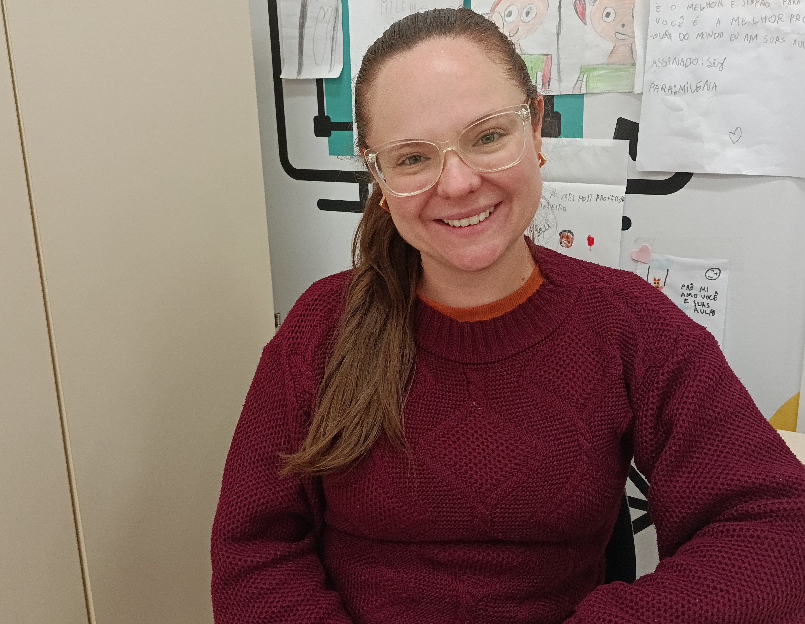
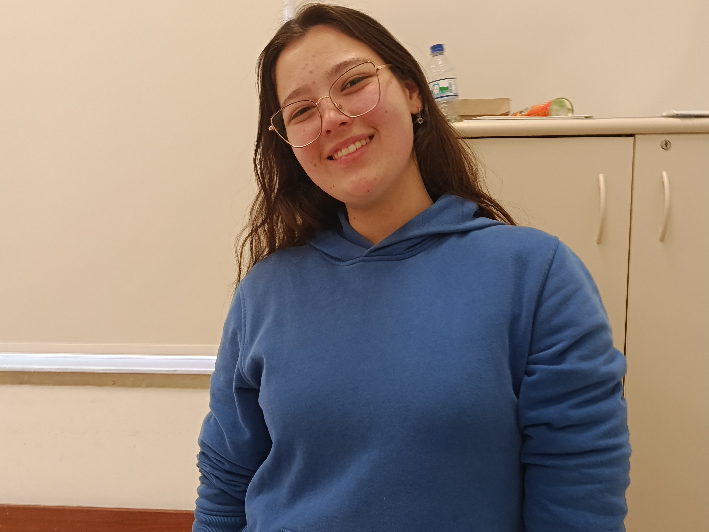

MULHERES —
Apoio Pedagógico
Milena
Milena atua há 2 anos como professora pedagoga do 2º ano no SESI. Iniciou sua trajetória como estagiária em 2018 e, posteriormente, conquistou a oportunidade de trabalhar na instituição. Inspirada por Cleide e Samara, valoriza a relação com a escola, onde se sente respeitada, acolhida e apoiada.

Desafio
Ensinar crianças com necessidades especiais, respeitando suas individualidades e necessidades.
Significado de trabalhar com a educação
Transformar vidas, enfrentando desafios e complementar a educação que vem de casa.
Importância da função
Valorizar os professores, fundamentais para a formação de todas as profissões.
Conquistas
Trabalhar no SESI e ter seu esforço reconhecido por meio de elogios.
Cada criança, um universo: ensinar, incluir e transformar vidas
Milena se emociona ao ver seus alunos, especialmente os especiais, aprendendo a ler e escrever. Motivada pelo amor às crianças, destaca que o trabalho docente vai além da escola e exige dedicação constante. Também reforça a importância de valorizar e respeitar os professores e seu papel na educação.
Mensagem aos alunos
“Escutem seu coração, mas também os mais velhos. Respeitem e aproveitem o tempo na escola. A vida é dura. Aproveitem o tempo que vocês tem.”Isabela
Isabela atua há 1 ano e 1 mês no SESI, sendo 7 meses como cuidadora escolar no Ensino Fundamental I. Mesmo sem experiência anterior em escolas, superou os desafios iniciais e hoje encontra satisfação em contribuir para o desenvolvimento das crianças. Inspirada pela mãe e pela avó, valoriza especialmente a criação de vínculos afetivos com os alunos.

Desafio
Adaptar-se ao ambiente escolar e às suas responsabilidades sem experiência anterior.
Significado de trabalhar com a educação
Ser uma referência de afeto, confiança e apoio para os alunos.
Importância da função
Apesar dos desafios, o carinho, a curiosidade e a espontaneidade das crianças tornam o trabalho gratificante.
Conquistas
Conquistar seu espaço e ser efetivada no SESI.
Cada criança, um universo: ensinar, incluir e transformar vidas
Isabela se emociona ao acompanhar a adaptação e o desenvolvimento das crianças, acreditando que pequenos passos levam a grandes conquistas. Motivada pelo carinho pelos alunos, valoriza cada gesto e destaca a importância das conquistas femininas e do espaço que as mulheres têm na sociedade.
Mensagem aos alunos
“Sempre sigam seus sonhos, independente de acharem que é difícil.”